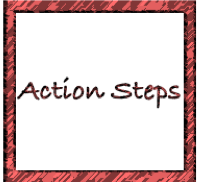
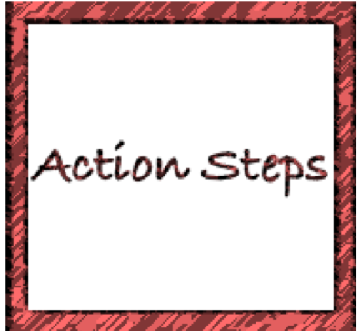

Data Visualization for Political Social Work
Andy Grogan-Kaylor
July 03, 2019
Visualization Possibilities

Your Graph Should Be A Self-Contained Story

Your Graph Should Be Embedded In A Story

 

Greyscale Graph

Color is Organizational Identity

Color Is Information

Color Is Accessibility

Color Is Emphasis

Example (Position Along A Common Scale)

Example (Length)

Example (Angle)